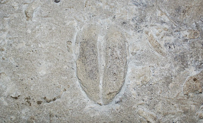
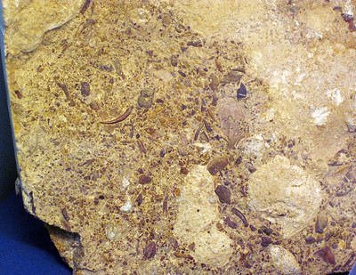
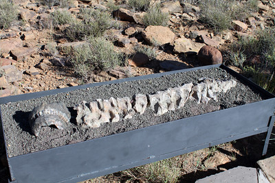
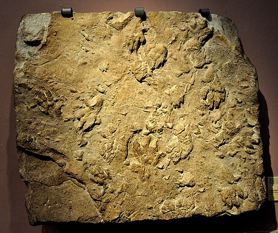
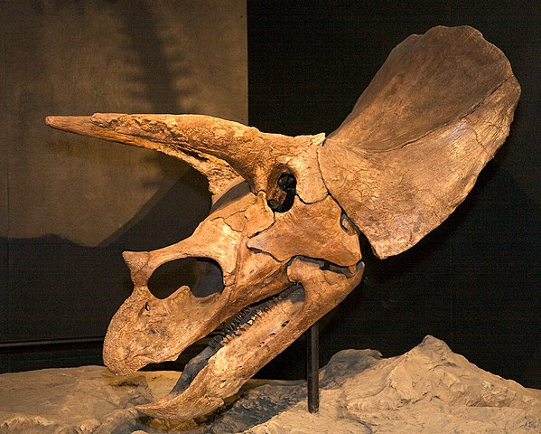

Cambridge dictionary defines extinction as "a situation in which something no longer exists".
Oxford Reference defines mass extinction as "The extinction of a large number of species within a relatively short interval of the geological time scale."
Click here to visit cambridge dictionary's definition
Click here to visit Oxford Reference's definition
The First Major Mass Extinction - The Ordovician Mass Extinction

"Rusophycus (trilobite burrow) (Ordovician-Silurian boundary section,
Route 41 roadcut at Ohio Brush Creek, Adams County, Ohio, USA) 1" by
James St. John is licensed under CC BY 2.0
The first mass extinction was the Ordovician Mass Extinction. It occured about 440 million years ago. It was during the Ordovician Period of the Paleozoic Era.
The Second Major Mass Extinction - The Devonian Mass Extinction

"Fossil fish bones in limestone (basal Delaware Limestone, Middle Devonian; eastern bank of the Scioto River,
Columbus, Ohio, USA) 2" by
James St. Jown is licensed under CC BY 2.0
The second mass extinction was the Deconian Mass Exctinction. It occured about 375 million years ago. It was during the Devonian Period of the Paleozoic Era.
The Third Major Mass Extinction: The Permian Mass Extinction

"Bradysaurus vertebrae from Permian Period, Karoo National Park" by
flowcomm is licensed under CC BY 2.0
The third mass extinction was the Deconian Mass Exctinction. It occured about 250 million years ago. It was during the Permian Period of the Paleozoic Era.
The Fourth Major Mass Extinction: The Triassic-Jurassic Mass Extinction

"Fossil track of a Chirotherium. Triassic Period. From England. Kelvingrove Art Gallery and Museum, Glasgow, UK" by
Osama Shukir Muhammed Amin FRCP(Glasg) is licensed under CC BY-SA 4.0
The fourth mass extinction was the Triassic-Jurassic Mass Exctinction. It occured about 200 million years ago. It was during the end of the Triassic Period of the Mesozoic Era.
The Fifth Major Mass Extinction: The K-T Mass Extinction

"File:WLA hmns Hell Creek Formation Triceratops.jpg" by
Wikipedia Loves Art participant 'etee_in_Space_Ceetee' is licensed under CC BY-SA 2.5
The fifth mass extinction was the K-T Mass Exctinction. It occured about 65 million years ago. It was during the end of the Cretaceous Period of the Mesozoic Era.